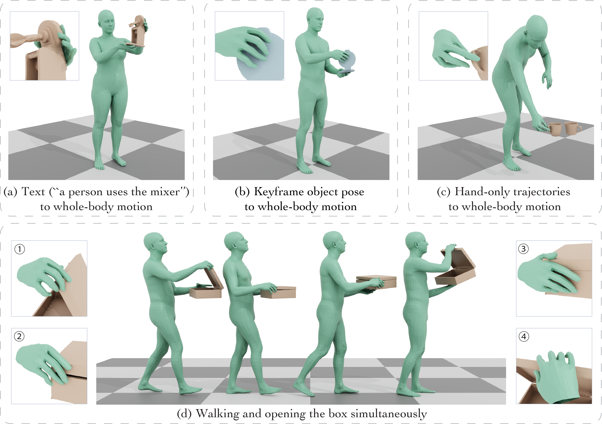
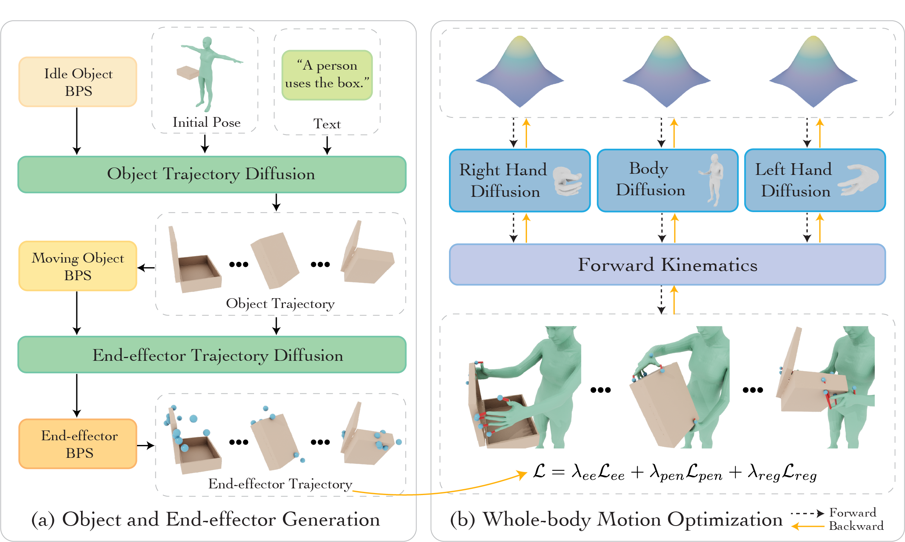

1The University of Hong Kong 2Zhejiang University
(1) This paper focuses on generating whole-body
manipulation of articulated object from text input. 💃
(2) The key idea is a novel
coordinated diffusion noise optimization framework,
where we perform noise-space optimization over three specialized diffusion models for the body, left hand, and right hand.
The coordination naturally emerges through gradient flow along the human kinematic chain.💪
(3) To improve precision of manipulation, we adopt a unified representation based on basis point sets (BPS), where end-effector positions are encoded as distances to the same BPS used for object geometry.
The resulting trajectories serve as targets to guide the optimization of diffusion noise, producing highly accurate motion.🎉

Our approach enables: (a) generating whole-body manipulation of articulated objects from text input (e.g., “a person uses the mixer”); (b) manipulating the object to a target pose and articulation (the blue object is the target pose); (c) synthesizing whole-body motion guided by trajectories from hand-only data; (d) generating motions involving simultaneous walking and manipulation (e.g., opening a box while walking).
Synthesizing whole-body manipulation of articulated objects, including body motion, hand motion, and object motion, is a critical yet challenging task with broad applications in virtual humans and robotics.
The core challenges are twofold.
First, achieving realistic whole-body motion requires tight coordination between the hands and the rest of the body, as their movements are interdependent during manipulation.
Second, articulated object manipulation typically involves high degrees of freedom and demands higher precision, often requiring the fingers to be placed at specific regions to actuate movable parts.
To address these challenges, we propose a novel coordinated diffusion noise optimization framework.
Specifically, we perform noise-space optimization over three specialized diffusion models for the body, left hand, and right hand, each trained on its own motion dataset to improve generalization.
Coordination naturally emerges through gradient flow along the human kinematic chain, allowing the global body posture to adapt in response to hand motion objectives with high fidelity.
To further enhance precision in hand-object interaction, we adopt a unified representation based on basis point sets (BPS), where end-effector positions are encoded as distances to the same BPS used for object geometry.
This unified representation captures fine-grained spatial relationships between the hand and articulated object parts, and the resulting trajectories serve as targets to guide the optimization of diffusion noise, producing highly accurate interaction motion.
We conduct extensive experiments demonstrating that our method outperforms existing approaches in motion quality and physical plausibility, and enables various capabilities such as object pose control, simultaneous walking and manipulation, and whole-body generation from hand-only data.
The code will be released for reproducibility.

Pipeline.
(a) Given the initial human pose, object pose, and text, we first generate the articulated object trajectory and the corresponding end-effector trajectories via two conditional diffusion models.
(b) We then optimize the latent noise inputs of three decoupled diffusion models by propagating gradients through the kinematic chain, guided by end-effector tracking, penetration, and regularization losses.
Finally, we forward the optimized noise through the diffusion models to synthesize coherent whole-body motion aligned with the generated object motion.
Input: "A person grabs the microwave." Input: "A person uses the microwave." Input: "The person passes the camera." Input: "The person takes picture with the camera." Walk forward. Walk backward. Walk left. Walk right. Sample 1: "A person uses the laptop." Sample 2: "A person uses the laptop."Method
Capabilities
Object Motion Control
Text Control
Simultaneous Locomotion and Manipulation
Diverse Results
Deployment on Simulated Humanoids
Whole-Body Motion from Hand-only Data
Generalization to Different Object Geometry
More Results
@article{pi2025coda,
title={CoDA: Coordinated Diffusion Noise Optimization for Whole-Body Manipulation of Articulated Objects},
author={Pi, Huaijin and Cen, Zhi and Dou, Zhiyang and Komura, Taku},
journal={arXiv preprint arXiv:25},
year={2025}
}